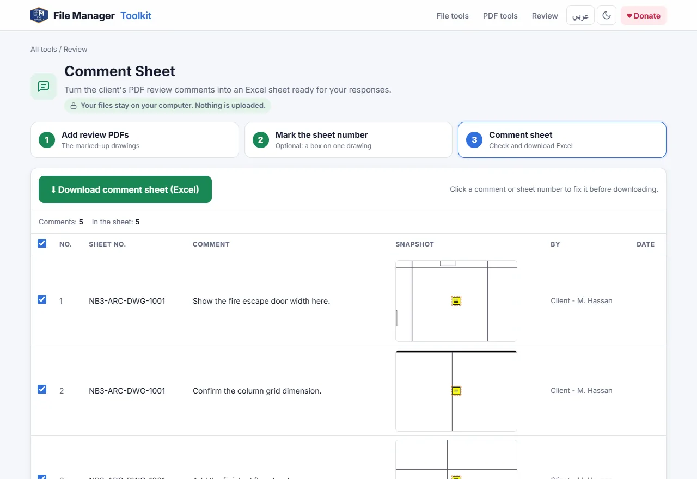

How to export PDF comments to an Excel comment sheet
Turn the review comments on marked-up PDF drawings into an Excel comment response sheet, with the sheet number, comment, author, date and a picture of where each comment was made.
Your files stay on your computer. Nothing is uploaded.
Short answer
Open Comment Sheet, add the marked-up PDFs, optionally draw a box around the drawing number, and click Download comment sheet. You get one Excel row per comment, with a snapshot of the spot and empty Response and Status columns for your replies.
Why copying comments by hand is a problem
When a client or consultant reviews a submission, the comments come back as notes, clouds and callouts on the PDFs. Before you can reply, someone has to copy each one into a comment response sheet, note which drawing it is on and describe where on the sheet it was made.
Acrobat's comment summary and comment export give you a list of text, but without the drawing number and without a picture of the spot, so the person answering still has to open every PDF to understand the comment. With 80 comments across 30 drawings that is hours of copying before any real work starts.
Step by step
Add the marked-up PDFs
Open the tool and click Choose PDF files, or Choose a folder for a whole review set. The tool counts the comments in each file as it reads them.
Mark the sheet number (optional)
On one drawing, drag a box around the drawing number in the title block. Every comment row then shows the number of the sheet it came from, instead of only the file name.
Check the comment list
Every comment appears with its sheet number, text, author, date and a snapshot of the area around it. Click a comment or sheet number to fix it, and untick any row you do not want in the sheet.
Add the project details
Fill in Project, Submission and Reviewed by so they appear at the top of the sheet. Tick Also include markups without text if clouds and arrows matter too.
Download the comment sheet
Click Download comment sheet (Excel). The workbook has the columns No., Sheet No., Comment, Snapshot, Commented By, Date, Response and Status.

What is read from the PDF
- Sticky notes, text boxes and callouts, with their text.
- Clouds, rectangles, arrows and highlights that carry a note.
- The author and date saved with each comment.
- Replies, which are added to the comment they answer when Add replies to the comment they answer is ticked.
Comments are read from the PDF itself, so they work whether they were made in Adobe Acrobat, Bluebeam Revu, Foxit, PDF-XChange or a tablet app, as long as they were saved as PDF comments and not flattened into the drawing.
Answering the comments
Send the Excel sheet to the team, write the replies in the Response column and set the Status to Open or Closed. Because every row has the sheet number and a picture, nobody has to open the PDFs again to understand what was asked.
Make your comment sheet now
Free, runs in your browser, and your drawings never leave your computer.
Open Comment Sheet →Questions
How do I export PDF comments to Excel?
Add the PDFs to Comment Sheet and click Download comment sheet. Every comment becomes one row in an Excel workbook.
Does it work with Bluebeam markups?
Yes. Bluebeam saves markups as standard PDF comments, so they are read like Acrobat comments.
Can I get a picture of each comment in Excel?
Yes. Each row includes a snapshot of the area of the drawing around the comment.
Are the client drawings uploaded?
No. The PDFs are read by your browser on your own computer and nothing is sent to a server.
Why are some comments missing?
If the reviewer flattened the PDF, the comments became part of the drawing and are no longer comments. Ask for the PDF with comments kept, or tick Also include markups without text for clouds and arrows.